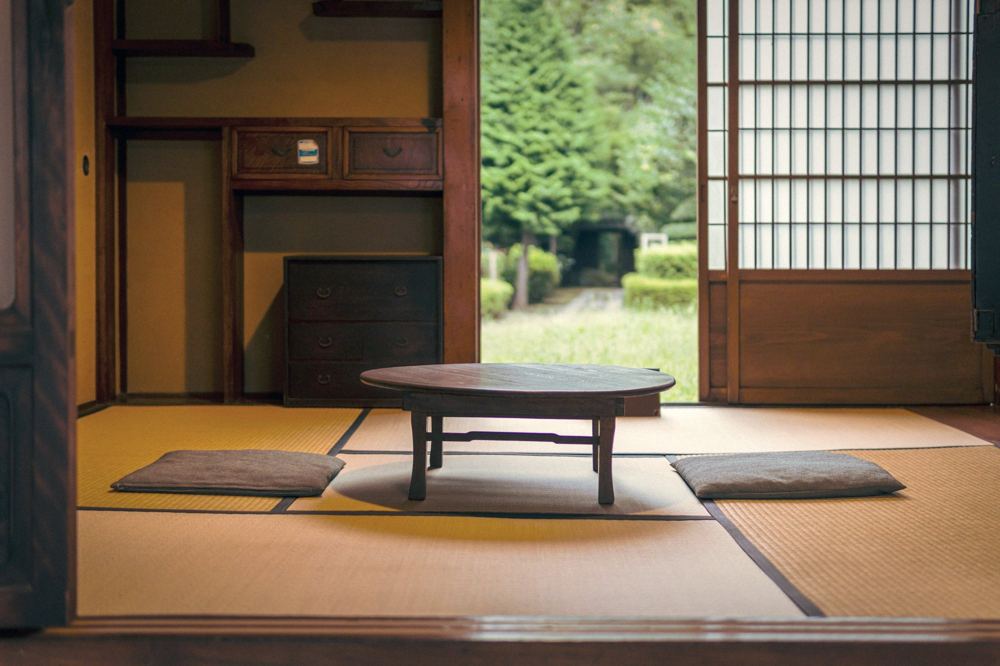

Brook Green · London
Aikido West
Aikido, taught the traditional way, in a calm hall in West London. Any age, any level, no experience needed. Come once and see.
A raked garden, Kyoto
Stillness
Before anything happens, the room is quiet.
That quiet is the first thing you learn and the first thing you take home. In an hour on the mat the noise of the week goes out of the body.
合気道
ai · ki · dō
What aikido is
A circle, not a collision.
Aikido is a Japanese martial art built on circles. Force is received, turned and returned, so that nobody is harmed and nothing is forced. You learn to stay calm when pushed, to move from your centre, and to put a person on the floor without hurting them.
There is no competition. The only person you are measured against is the one you were last month.
Connection
Every technique needs a partner.
You learn as much from receiving as from leading, and the partner you throw is the one who will catch you. Classes are small. Everyone is seen.
The teacher
Arabella Braun, 5th Dan.
The art reaches you as it reached her: by hand, corrected gently, one movement at a time.
Arabella Braun at the Masbro Centre
Your first class
Come as you are.
Wear loose clothes you can move in and bring water. Everything else is provided, including patience. A first class is booked online and costs what it says; nothing follows unless you decide it should.
What happens
A bow, and ninety minutes.
A warm-up, learning to fall safely, two or three techniques with a partner, a bow, and tea. You will be tired in a good way.
Who comes
People like you.
People who sit at desks all day. People who have done other arts. People who have done nothing at all. Adults of every age and build, in the same class.
What it costs
Every fee on one page.
No contracts and no hidden extras. Membership, the six-week course and a first class are all set out plainly. Times and fees

The hall
A plain room off Brook Green.
The Masbro Centre, 87 Masbro Road, London W14 0LR. About ten minutes on foot from Olympia and Shepherd's Bush, fifteen from Hammersmith. Changing rooms, a swept mat, and a kettle.
The door
Come once. Decide after.
No experience, no uniform, no promise. Book a first class and the rest follows.
Fushimi Inari, Kyoto
Aikido West
Brook Green · London · 合気道西
Mount Fuji from the lake, before dawn